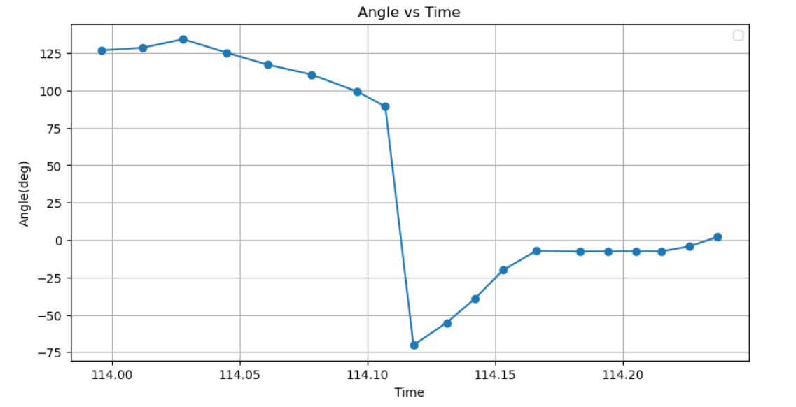

Lab 6: Orientation Control
Prelab
In this lab, I implemented orientation PID using the IMU. This required integrating the gyroscope to estimate orientation and tuning a PID controller for effective control; it very tedious, but I got it done.
For communication, data was sent and received via Bluetooth. I wrote a command in C for my PID loop and decided I would put communications at the end of my PID loop and append it into an array and then end all that data back using a loop at the end.
times[i] = millis();
curr_ang_arr[i] = current_angle;
target_ang_arr[i] = target_angle;
prev_err[i]= previous_error;
control_sg[i] = control_signal;
motor_o[i] = motor_offset;
i=i+1;
Here is where I sent it back. I implemented this function within my STOP_PID function.
void sendStoredPIDData() {
for (int j = 0; j < MAX_SAMPLES; j += 1) {
tx_estring_value.clear();
tx_estring_value.append(curr_ang_arr[j]);
tx_estring_value.append(" | ");
tx_estring_value.append(target_ang_arr[j]);
tx_estring_value.append(" | ");
tx_estring_value.append(prev_err[j]);
tx_estring_value.append(" | ");
tx_estring_value.append(control_sg[j]);
tx_estring_value.append(" | ");
tx_estring_value.append(motor_o[j]);
tx_estring_value.append(" | ");
tx_estring_value.append(times[j]);
tx_estring_value.append(" | ");
tx_characteristic_string.writeValue(tx_estring_value.c_str());
delay(100);
}
I parsed the data in python later and put it into an array instead. From there, I parsed the arrays:
def sort_data(data):
new_data = []
current_angle = []
target_angle = []
previous_error = []
control_signal = []
motor_offset = []
time = []
for i in range(len(data)):
for j in range(len(data[0])):
if j == 0:
current_angle.append(data[i][j])
elif j == 1:
target_angle.append(data[i][j])
elif j == 2:
previous_error.append(data[i][j])
elif j == 3:
control_signal.append(data[i][j])
elif j == 4:
motor_offset.append(data[i][j])
else:
time.append(data[i][j])
new_data.append(current_angle)
new_data.append(target_angle)
new_data.append(previous_error)
new_data.append(control_signal)
new_data.append(motor_offset)
new_data.append(time)
return new_data
data = [
[10, 20, 30, 40, 50, 60],
[15, 25, 35, 45, 55, 65]
]
k = sort_data(data)
time_a = k[5]
angle_arr = k[0]
control_sig = k[3]
Lab
PID Controller Implementation and Testing
The first step was implementing the PID controller to stabilize the robot’s yaw using the IMU data. Below are the initial PID values I used:
Kp = 7.65
Ki = 1.53
Kd = 20.4
Here is my code
void runPIDControl() {
unsigned long current_time = millis();
dt = (current_time - last_time) / 1000.0;
last_time = current_time;
current_angle = getYaw();
float error = target_angle - current_angle;
integral += error * dt;
integral = constrain(integral, -max_integral, max_integral);
float derivative = (error - previous_error) / dt;
previous_error = error;
float control_signal = Kp * error + Ki * integral + Kd * derivative;
int motor_offset = constrain(control_signal, 0, 255);
applyMotorControl(error, motor_offset);
Graphs of the angle versus time were generated to analyze the controller’s response and control Signal vs Time.
|  |
{kind=link}
{kind=link}
Testing and Debugging
I also wrote some tuning functions that could help me adjust my values without me recompiling.
case SET_ANGLE:
float angle;
if (!robot_cmd.get_next_value(angle)) {
Serial.println("ERROR: SET_ANGLE requires 1 float value.");
return;
}
target_angle = angle;
Serial.print("New target angle: ");
Serial.println(target_angle);
break;
case SET_PID:
float newKp, newKi, newKd;
if (!robot_cmd.get_next_value(newKp) || !robot_cmd.get_next_value(newKi) || !robot_cmd.get_next_value(newKd)) {
Serial.println("ERROR: SET_PID requires 3 float values.");
return;
}
Kp = newKp; Ki = newKi; Kd = newKd;
Serial.println("Updated PID gains.");
break;
I wrote a function that calibrates my IMU and tries to deal with the drift due to the bias. I implemented this in the beginning during setup so I would have the constant.
void calibrateIMU() {
float bias_sum = 0;
for (int i = 0; i < 100; i++) {
imu.getAGMT(); // Read IMU data
bias_sum += imu.gyrZ();
delay(10);
}
gyro_bias = bias_sum / 100.0;
}
Here is a video of the robot stabilizing its orientation. I accidentally deleted some of the videos when clearing my phone storage.
Lab Questions /Discussion
I answered some lab questions below?
Are there any problems that digital integration might lead to over time? Are there ways to minimize these problems?
Digital integration of the gyroscope data can lead to drift due to sensor noise and small errors accumulating over time. This is often referred to as yaw drift and can result in incorrect orientation estimates. This can be minimized by using a complementary filter or Kalman filter ( haha Lab 7 lol) to fuse the IMU data with other sensors and correct drift. Resetting the orientation based off of landmarks and data collected can be useful as well (yay I did this or using the DMP, which has a built in filter can be helpful.
Does your sensor have any bias, and are there ways to fix this? How fast does your error grow as a result of this bias?
It is common for gyroscopes have a constant bias that causes the error to grow linearly over time. If you measure it while it is stationary, you can subtract the constant bias. Additionally, the DMP can be useful.
Are there limitations on the sensor itself to be aware of? What is the maximum rotational velocity that the gyroscope can read? Is this sufficient for our applications, and is there a way to configure this parameter?
Each IMU has a maximum detectable rotational velocity before saturation occurs. According to the documentation of the IMU we use, it has “a full scale range of ±250 dps, ±500 dps, ±1000 dps, and ±2000 dps”. If the robot rotates faster than this limit, the sensor will clip values, leading to incorrect readings. Making sure within the code that it is not going faster that that, can prevent this.
Does it make sense to take the derivative of an integrated signal?
Since the gyroscope provides angular velocity, integration is used to obtain orientation. The derivative would just return the same original signal which is useless.
Does changing your setpoint while the robot is running cause problems with your implementation of the PID controller?
A sudden change in the setpoint can cause a sharp spike in the derivative term and this can destabilize the robot. Low-pass filters can help.
Is a lowpass filter needed before your derivative term?
Yes, it is common to use a low-pass filter on the gyroscope readings before computing the derivative term as it reduces the effect of high-frequency noise potentially causing instability in the controller.
Can you control the orientation while the robot is driving forward or backward? Why would this be useful ? (not required)
I did not, but it will be useful in the future when it comes down to following a path as it can move forward and backwards and tune itself.
Reflection
This lab improved my understanding of PID tuning. I learned a lot about sensor bias and it was a fun but sometimes demoralizing.
Acknowledgements
Thank you to Anunth Ramaswami for lending me his robot when mine stopped working. I based my PID values similar to his before my robot broke and continued to do so after. My code worked much more differently than his and I scaled my values accordinly. Thank you to Aidan McNay for sitting in the same room as me and working for moral support. Thanks to course staff for their guidance.
ChatGPT was used to debug code(albeit it was not the most useful) and help also debug why my pics and videos keep glitching.